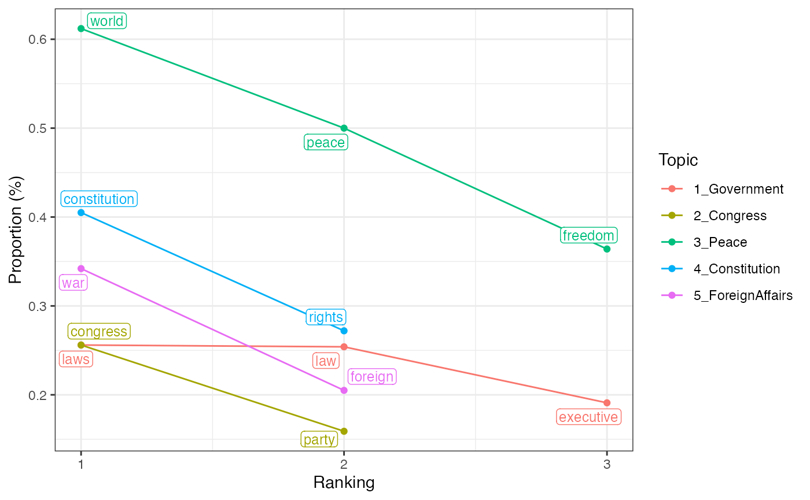

To fit topic models with keyATM, users need to transform their text data using keyATM_read(). This page explains three ways to input text data into keyATM_read().
keyATM can read a document-feature matrix (dfm object) created by quanteda package (this method is strongly recommended). Since keyATM does not provide preprocessing functions, we recommend users to preprocess texts with quanteda. By making a token object from a corpus object, quanteda can perform various preprocessing methods (quanteda Quick Start: Tokenizing texts). Users can create a dfm object from a token object.
Here is an example of loading text data and transform it into the quanteda corpus format. We use the readtext package in this example.
library(quanteda)
library(readtext)
# Read text files
raw_docs <- readtext("PATH_TO_THE_FOLDER/*.txt",
encoding = "UTF-8")
# Preprocessing with quanteda and create a dfm object
key_corpus <- corpus(raw_docs, text_field = "text")
# If you use the covariate model, please consider using `docvars` argument
key_corpus <- corpus(raw_docs, text_field = "text", docvars = COVARIATES)
# You can conduct a variety of preprocessing in this step as shown in the next section
key_token <- tokens(key_corpus)
# Create a document-feature matrix (a dfm object) from a token object
key_dfm <- dfm(key_token)We show a concrete example of preprocessing data and loading it into the keyATM. We use the US presidential inaugural address data that is one of the built-in datasets of the quanteda.
library(keyATM)
library(quanteda)
library(magrittr)
data(data_corpus_inaugural, package = "quanteda")
data_corpus_inaugural <- head(data_corpus_inaugural, n = 58)Since the US presidential speech dataset is a corpus object, we use the tokens() function to convert this data into a token object and to preprocess texts before creating a dfm object. The tokens() and related functions in the quanteda provide various preprocessing functions. Preprocessing can reduce the number of unique features (words) in the corpus, which is critical for increasing the interpretability. In the example below, we adopt some of the most common preprocessing steps.
data_tokens <- tokens(data_corpus_inaugural,
remove_numbers = TRUE,
remove_punct = TRUE,
remove_symbols = TRUE,
remove_separators = TRUE,
remove_url = TRUE) %>%
tokens_tolower() %>%
tokens_remove(c(stopwords("english"),
"may", "shall", "can",
"must", "upon", "with", "without")) %>%
tokens_select(min_nchar = 3)The tokens() function removes punctuations and unnecessary characters,
The tokens_tolower() function converts all characters into lower cases, The tokens_remove() function removes general stop words (e.g, the, is, at, with stopwords("english")) and corpus specific high frequent words (“may”, “shall”, …, “without” in this example), and tokens_select drops short words that do not usually contribute to interpreting topics.
Before loading data into the keyATM, we construct a document-feature matrix (dfm object) with the dfm() function in the quanteda. We trim infrequent terms with the dfm_trim() function.
Finally, keyATM_read function reads your data for keyATM.
keyATM_docs <- keyATM_read(texts = data_dfm)
summary(keyATM_docs)## keyATM_docs object of: 58 documents.
## Length of documents:
## Avg: 876.19
## Min: 48
## Max: 3001
## SD: 509.977
## Number of unique words: 2685Researchers are required to remove any documents that do not contain any terms before using the keyATM_read() function. If there are documents that do not contain any terms, the keyATM_read() function raises a warning. It is highly recommended to manually check documents with length 0 before fitting the model, otherwise, the keyATM will automatically drop these documents when fitting a model. Even so, we suggest users to remove documents that do not contain any words as a part of preprocessing. As explained in the later section, this process is especially critical when the covariate model or the dynamic model is fitted. The example below shows the warning that the keyATM_read() function displays.
keyATM_docs0 <- keyATM_read(texts = data_dfm_len0)## Warning in get_doc_index(W_raw, check = TRUE): Number of documents with 0 length: 2
## This may cause invalid covariates or time index.
## Please review the preprocessing steps.
## Document index to check: 10, 50The warning message above indicates that there are two documents in data_dfm_len0 that do not contain any terms (the index 10 and 50). In the quanteda, we can easily remove documents without any word counts with the following function.
data_dfm_rm0 <- dfm_subset(data_dfm_len0, ntoken(data_dfm_len0) > 0)There are two other ways to read texts, which we do not recommend. Please make sure to preprocess texts with other packages or softwares. In both methods, each word should be separated by a single space.
keyATM_read() can read data.frame and tibble if you preprocess texts without quanteda. Please store texts in a column named text. Below shows the example of the required data format.
> head(docs) # `docs` stores preprocessed texts
# A tibble: 6 x 1
text
<chr>
1 h.r h.r one hundred first congress congress congress united u...
2 first congress one congress congress united united state stae...
3 one one one one one one one one one one one one one one one o...
4 h.r h.r one one one hundred hundred first first congress cong...
5 congress congress one united united united united united unit...
6 h.r h.r one one one one one hundred hundred first congress co...
# Read texts into keyATM
keyATM_docs <- keyATM_read(docs)If you have preprocessed text files, you can pass a list of files to keyATM_read().
# Create a list of paths to text files
textfiles <- list.files(PATH_TO_THE_FOLDER, pattern = "*.txt", full.names = TRUE)
# Read texts into keyATM
keyATM_docs <- keyATM_read(textfiles)Feeding keywords into models plays an essential role in the keyATM. Researchers are expected to use their substantive knowledge and to carefully select keywords.
In this application, suppose we are interested in five topics, Government, Congress, Peace, Constitution, and Foreign affairs and choose keywords for each of these topics.
keywords <- list(Government = c("laws", "law", "executive"),
Congress = c("congress", "party"),
Peace = c("peace", "world", "freedom"),
Constitution = c("constitution", "rights"),
ForeignAffairs = c("foreign", "war"))A set of keywords should be stored in a list object, and we recommend users to name each topic for clarity. Each keyword-topic can have a different number of keywords.
Keywords should appear reasonable times (typically more than 0.1% of the corpus) in the documents. The visualize_keywords() function plots the frequency of keywords by topic.
key_viz <- visualize_keywords(docs = keyATM_docs, keywords = keywords)
key_viz The figure helps you to check the frequency of keywords. Including low-frequency keywords do not help the model in general.
Proportion is defined as a number of times a keyword occurs in the corpus divided by the total length of documents. This measures the frequency of the keyword in the corpus. Formally, the proportion of the keyword \(v\) is, \[ \begin{align*} \text{Proportion of }v = \frac{\sum_{d=1}^{D} \sum_{i=1}^{N_d} I(w_{di} = v) }{\sum_{d=1}^{D} N_d} \end{align*} \] where \(N_d\) is the length of the document \(d\) and \(I\) is an indicator function. Keywords of each topic are ordered by the proportion (x-axis).
You can save the plot with the save_fig() function,
key_viz <- visualize_keywords(docs = keyATM_docs, keywords = keywords)
save_fig(key_viz, "figures/keyword.pdf", width = 6.5, height = 4)and get the actual values with the values_fig() function.
values_fig(key_viz) ## # A tibble: 12 x 5
## # Groups: Topic [5]
## Word WordCount `Proportion(%)` Ranking Topic
## <chr> <int> <dbl> <int> <fct>
## 1 laws 130 0.256 1 1_Government
## 2 law 129 0.254 2 1_Government
## 3 executive 97 0.191 3 1_Government
## 4 congress 130 0.256 1 2_Congress
## 5 party 81 0.159 2 2_Congress
## 6 world 311 0.612 1 3_Peace
## 7 peace 254 0.5 2 3_Peace
## 8 freedom 185 0.364 3 3_Peace
## 9 constitution 206 0.405 1 4_Constitution
## 10 rights 138 0.272 2 4_Constitution
## 11 war 174 0.342 1 5_ForeignAffairs
## 12 foreign 104 0.205 2 5_ForeignAffairsThe prune argument of the visualize_keywords() function is TRUE by default. It drops keywords that do not appear in the corpus and raises a warning if there is any.
keywords_2 <- list(Government = c("laws", "law", "non-exist"))
key_viz2 <- visualize_keywords(docs = keyATM_docs, keywords = keywords_2)## Warning in check_keywords(unique(unlisted), keywords, prune): A keyword will be
## pruned because it does not appear in documents: non-existIf all keywords assigned to a topic is pruned, it raises an error.
keywords_3 <- list(Government = c("non-exist", "non-exist2"))
key_viz3 <- visualize_keywords(docs = keyATM_docs, keywords = keywords_3)## Error in check_keywords(unique(unlisted), keywords, prune): All keywords are pruned. Please check: GovernmentBesides choosing keywords using substantive knowledge, researchers can select keywords based on the result of an unsupervised topic model if they have a large enough corpus. The keyATM_read() function can make a subset of the corpus by randomly splitting each document (i.e., this is not a random sample of documents). In the following example, we use 30% of each document to fit an unsupervised model (results will not be meaningful because we only have 140 documents). An unsupervised model such as the LDA can explore the corpus. We use its result to select keywords for the keyATM models (here, we fit the base model). This computer-assisted keyword selection does not mean that researchers need to select all keywords from the top words of the LDA. Researchers can use other methods such as a keyword selection algorithm proposed in King, Lam and Roberts (2017).
set.seed(225) # set the seed before split the dfm
keyATM_docs_withSplit <- keyATM_read(texts = data_dfm,
split = 0.3) # split each document
out <- weightedLDA(docs = keyATM_docs_withSplit$W_split,
number_of_topics = 10, # the number of potential themes in the corpus
model = "base",
options = list(seed = 250))
top_words(out) # top words can aid setting keywords
out <- keyATM(docs = keyATM_docs_withSplit, # text input
no_keyword_topics = 5, # number of topics without keywords
keywords = keywords, # keywords
model = "base", # select the model
options = list(seed = 250))Now you have texts and keywords! The next step is to fit a model with the keyATM() function. keyATM has three models:
You can find details in FAQ.